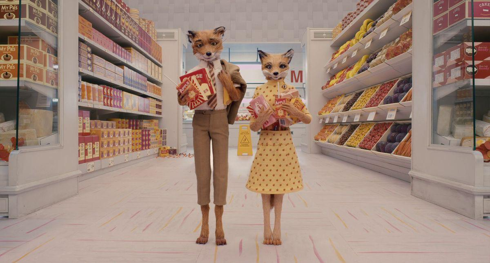

05 / 05
EL
SUPERMERCADO
Después de escapar y construir una nueva vida bajo tierra, los animales descubren que tienen acceso a un supermercado.
Este lugar funciona como un cierre irónico: después de intentar robar comida directamente de las granjas, terminan viviendo debajo de un espacio lleno de alimentos.

FIN DEL RECORRIDO